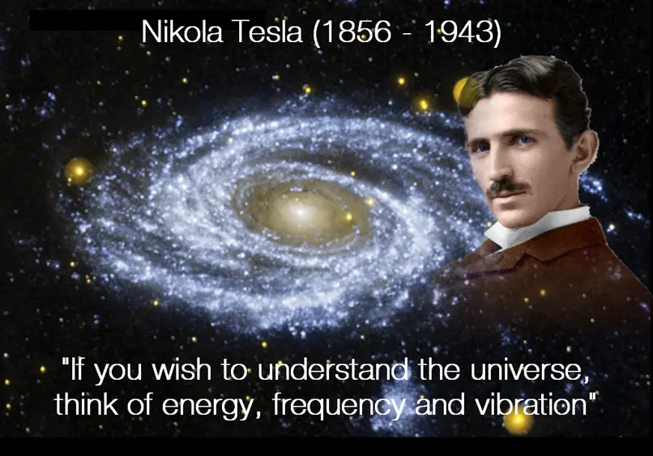
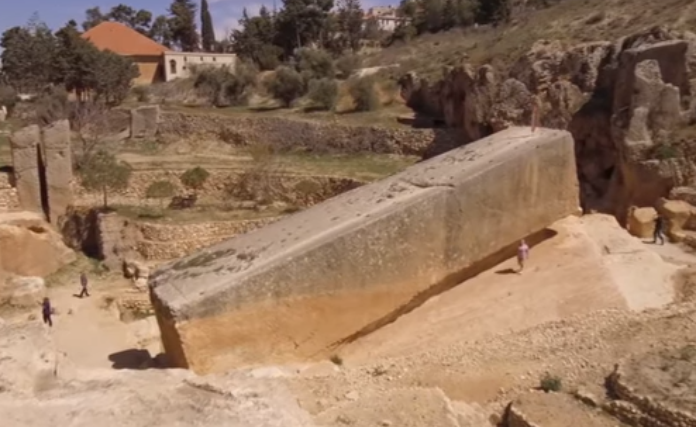

The Power of Frequency and Vibration
Nikola Tesla was a genius. He held over 700 patents for inventions that are the key components to most gadgets we use today.
Tesla was quoted saying:
“If you want to find the secrets of the universe, think in terms of energy, frequency and vibration.”
Another world famous genius agrees: “Everything in life is vibration” – Albert Einstein.
Without Tesla’s patents, Guglielmo Marconi would never have discovered radio.
He perfected Thomas Edison’s discovery of DC electricity (Alternating Current).
Tesla was also on the verge of discovering unlimited clean free energy for the world… until his financier JP Morgan shut him down (so Morgan could channel his funds to make money exploiting oil).
Frequencies that almost leveled a skyscraper
Excerpt from the New York World Telegram, July 11, 1935
Nikola Tesla revealed that an earthquake which drew police and ambulances to the region of his laboratory at 48 E. Houston St., New York, in 1898, was the result of a little machine he was experimenting with at the time which ”you could put in your overcoat pocket.”
The bewildered newspapermen pounced upon this as at least one thing they could understand and Nikola Tesla, “the father of modern electricity” told what had happened as follows:
Tesla stated, “I was experimenting with vibrations. I had one of my machines going and I wanted to see if I could get it in tune with the vibration of the building. I put it up notch after notch.
There was a peculiar cracking sound. I asked my assistants where did the sound come from. They did not know.
I put the machine up a few more notches. There was a louder cracking sound
I knew I was approaching the vibration of the steel building.
I pushed the machine a little higher.
Suddenly all the heavy machinery in the place was flying around.
I grabbed a hammer and broke the machine.
The building would have been about our ears in another few minutes.
Outside in the street there was pandemonium. The police and ambulances arrived.
I told my assistants to say nothing. We told the police it must have been an earthquake.
That’s all they ever knew about it.
Some shrewd reporter asked Dr. Tesla at this point what he would need to destroy the Empire State Building and the doctor replied:
“Vibration will do anything. It would only be necessary to step up the vibrations of the machine to fit the natural vibration of the building and the building would come crashing down. That’s why soldiers break step crossing a bridge.”
Frequencies and heavy objects
In the excerpt above, after increasing the frequency on Tesla’s “frequency oscillator” Tesla is quoted saying: “Suddenly all the heavy machinery in the place was flying around”.
This key statement supports theories that the ancient civilizations such as the ancient Egyptians used sound frequencies to lift incredibly heavy, giant blocks of stone – megalith’s.
What’s a megalith? – A megalith is a massive stone that has been used to construct a structure or monument, either stand-alone or together with other giant stones.
The granite megaliths of the kings chamber – in the valley of the kings weigh up to 60 tons each and were transported over 500 miles from the Aswan quarry. Although boats are an obvious means for moving the stones for most of the distance, fitting them perfectly in place within the pyramid is another matter.
Theses feats of engineering aren’t limited to Egypt. An ancient megalith of Baalbek in Lebanon weighs a staggering 1,650 tons. If challenged to move this mammoth block of stone today – modern engineers would not be able to transport it.

Archaeologists and scientists claims these ‘primitive’ civilizations used brute strength to move these colossal stones … but how do they explain megaliths of Peru weighing 400 tonnes each being transported from a quarry more than 200 miles away… through a steep mountain incline, up to 15,000 feet?
Other than using brute strength (which academic’s can’t properly explain)… acoustic levitation is a theory that’s gaining traction… but still not proven.
Scientists have demonstrated that they can use sound to lift small objects, but nothing remotely close to moving a megalith.
With so much wisdom lost in the book-burning pyres of the middle ages, it is apparent that the some of the secrets of frequency and vibration have been lost… for now.
Frequency for cutting
Scientists are stumped when it comes to explaining how these megaliths were moved, but they’re equally confused on how they were cut so perfectly.
Archaeologists claim that ancient civilizations used primitive stone cutting techniques. Yet every megalith surveyed shows incredibly clean cuts – rivaling the work of modern stone masons. The precise cuts of these enormous building blocks allow them to fit together so well that you could not fit a razor blade between them.
The most commonly used stone the ancients used was either granite, quartz or diorite – which are some of the hardest stones in the world. To cut these stones with such precision today, you need special diamond tipped tools.
When you add these factors together, it debunks the commonly held belief that these giant building blocks were cut using crude instruments.
Check out this video that supports the theory of frequency being used to cut stone.
After learning about these interesting facts, Nikola Tesla’s famous quote about sound, frequency and vibration holding the secrets to the Universe begin to make a little more sense and evokes a lot more curiosity.
Frequencies used for medical purposes
Frequency treatments such as ultrasound is commonly used in modern medicine to reduce swelling and inflammation. With recent breakthroughs using ultrasound to break up kidney stones and even destroying tumors.
Click here to discover how frequencies are replacing acupuncture needles – allowing pain sufferers to treat themselves at home.